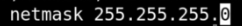

Subnetting Techniques
The most commont subnetting network used in household is the /24 (whack 24) network, it has the value of 255.255.255.0. Each placement consist of 8 bits, 255 is the result of each bit having their switch on.

This is called /24 because of the amount of 1's in the bits of data which is (8 + 8 + 8 + 0 = 24). The number of host in this kind of subnet is 2 ^ n, where n is the amount of zeroes, in our standard case, 2 ^ 8 = 256 host, easy computation is by taking the 32 - /number network, 32 - 24 = 8 as n. A host is any hardware device that has the capability of permitting access to a network via a user interface, specialized software, network address, protocol stack, or any other means . In our case, this are the number of connected device in a network.

Here is a simple table that could do the job of identifying the subnet by whack number. each number from 1 to 32 are whack placeholder number. Host are written in decreasing order by dividing itself to 2, subnet is computed thorugh a fibonacci sequence where previous subnet value was added to the host. If your subnet is on /14, therefore, the subnet value was 252, and because it is one second row, we will only have 2 placements plus zero placeholder and the resulting value was 255.252.0.0.
In easier terms: first row = x.0.0.0, second = 255.x.0.0, third = 255.255.x.0, fourth = 255.255.255.x. Also remember that /32 is max = 255.255.255.255
/24 is for small businesses or for home plan. Large companies use lower whack as they need more host.
Subnetting is about how address can we fit (host) and the mask (255.255.255.0) behind it.
Always substract 2 to the total of the host, hence in /24 = 2 ^ 8 = 256 - 2 = 254 available host
People refers to their network as this. 168.8.1.0/24, and we already knew that /24 contains 256 or 254 host amd has a mask of 255.255.255.0. This means we have 256 possible devices from 168.8.1.1 to 168.8.1.254
In 10.1.0.0/16 has 255.255.0.0, 2 of the zeroes are free gain and the probable host is equivalent to 2 ^ 16 = 65,536. It can be a host from 10.1.0.1 to 10.1.1.254 which is 256 ^ 2 = 65,536 - 2
So why do we always substract it into 2, because of the network and broadcast id that will take up (network id = 10.1.0.0, and broadcast id = 10.1.255.255) or if 168.8.1.0 /24, then,
(network id = 192.168.1.0 and broadcast id = 192.168.1.255)
For 192.168.1.0 /28, then network id = 192.168.1.0 and broadcast id = 192.168.1.15 as the total number of host is 16 but the available host we can use is only 14.
For 192.168.1.16 /28, then network id = 192.168.1.16 and broadcast id = 192.168.1.31 still having 16 total host.
For 192.168.0.0 /23, the subnet would be 255.255.254.0, the number of available host is 510,network id will be 192.168.0.0 and the broadcast id will be 192.168.1.255, the 1 represents a new network so basically it is 256 + 256 = 510 + 2 host
The best way to do is just search google. ipaddressguide.com